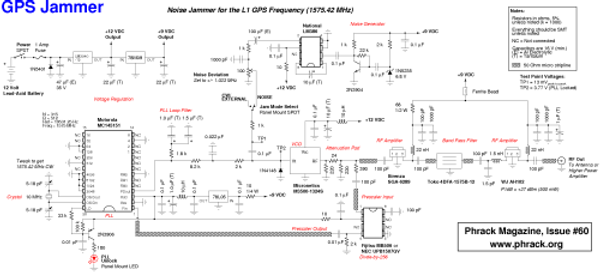

GPS Jammer
From Bricowiki
OVERVIEW
A low cost device to temporarily disable the reception of the civilian course acquisition (C/A) code used for the standard positioning service (SPS)[1] on the Global Positioning System (GPS/NAVSTAR) L1 frequency of 1575.42 MHz.
This is done by transmitting a narrowband Gaussian noise signal, with a deviation of +/- 1.023 MHz, on the L1 GPS frequency itself. This technique is a little more complicated than a simple continuous wave (CW) jammer, but tends to be more effective (i.e. harder to filter) against spread spectrum based radio receivers.
This device will have no effect on the precise positioning service (PPS) which is transmitted on the GPS L2 frequency of 1227.6 MHz and little effect on the P-code which is also carried on the L1 frequency. There may be a problem if your particular GPS receiver needs to acquire the P(Y)-code through the C/A-code before proper operation.
This device will also not work against the new upcoming GPS L5 frequency of 1176.45 MHz or the Russian GLONASS or European Galileo systems. It can be adapted to jam the new civilian C/A-code signal which is going to also be transmitted on the GPS L2 frequency.
That said, it will work against the majority of consumer/OEM GPS receivers, provided they are not setup in any advanced anti-jam configuration.
Why?
The rise of cheap GPS based navigation (or hidden tracking devices) over the past few years has made it necessary for the typical citizen to take up the fine art of electronic warfare.
Several companies[2] now sell "hidden" GPS based tracking devices which mount inside or underneath your vehicle. Some transmit the coordinates, via cellular phone, of your vehicle's present and/or past locations for weeks at a time without battery changes or court orders!
Vehicle rental companies have been known to use GPS tracking devices to verify you don't speed or abuse their rental vehicles. The unsuspecting renter is often faced with these hidden abuse "fees" after returning the rental vehicle.
Law enforcement agencies keep track of house arrest prisoners with simple GPS based tracking bracelets[3]. Some even use GPS for automatic vehicle location (AVL) on their squad cars to allow the dispatchers to send in the closest unit to a particular call or to know an officer's location in case of an emergency situation where they can't use their radio.
Cellular phone companies, trucking companies, private investigators, toll-roads, aircraft, those "protect your child" systems and many more services are all fully involved with the use of GPS based tracking. The problem is, do you really want everyone to know where you are?
Technical Description
This will be a brief description of each of the major sections which compromise the entire jammer device. Refer to the included schematic diagram (Appendix B) as you read along. You should also refer to the component's datasheets for even more detailed information.
Phase Locked Loop
The jammer's main oscillator components consist of a Motorola MC145151 phase-locked loop (PLL) frequency synthesizer chip, a Micronetics M3500- 1324S voltage controlled oscillator (VCO) module and a Fijitsu MB506 divide -by-256 prescaler chip.
The VCO feeds a portion of its radio frequency (RF) output signal into the prescaler chip, where it is divided by 256. A 1575 MHz signal would be turned into a 6.15234375 MHz signal. This is then fed into one side of the PLL chip.
The other side of the PLL is fed with a reference frequency which is derived from a 10 MHz quartz crystal. This crystal reference frequency is divided down 512 times by the PLL to reach 19531.25 Hz. The 6.15234375 MHz prescaler output frequency is also further divided down 315 times by the PLL chip for a final frequency of 19531.25 Hz. This will be the new PLL internal reference frequency. That big bad 1575 MHz microwave signal now looks like a simple audio frequency to the PLL chip and the supporting components.
The PLL chip internally compares the phase of the 19531.25 Hz VCO side signal to the phase of the 19531.25 Hz crystal side signal. The PLL chip outputs high or low voltage pulses depending on whether the crystal signal is leading or lagging in phase with the VCO signal. These pulses are then filtered and dampened into a pure DC control signal via a simple passive loop filter. This cleaned up signal is then connected to the VCO's voltage tune control input.
When everything is working properly, the VCO's output frequency is locked to whatever frequency you programmed into the PLL chip, 1575 MHz in this case. It will stay on that frequency even through dramatic temperature changes, a problem that a non-PLL VCO would have. If the PLL is not working properly, the red "PLL Unlock" LED will be lit.
Due to a quirk with using low cost, easy to obtain components, you'll need to tweak two loading capacitors on the reference crystal. This is unusual, but necessary to move the signal from the default 1575 MHz to the more appropriate 1575.42 MHz (+/- a few hundred Hertz). This is a very important and delicate procedure, and you'll need a frequency counter to accomplish it.
Noise Generator
The actual noise generator of the jammer is very simple. A 6.8 Volt Zener diode is first biased, buffered and amplified by a single 2N3904 transistor. This single Zener diode is capable of generating broadband noise signals from audio frequencies up to over 100 MHz. We then filter this noise signal down to something more practical and something which the VCO module can actually respond too. This is done via the LM386 audio amplifier chip. The LM386 both amplifies and low pass filters the final noise signal. The final LM386 output signal will have enough overhead if you need to adapt it for a wideband noise jammer.
This low frequency noise signal is fed, via a 100 Ohm potentiometer, to a simple resistor/capacitor network where it's mixed with the VCO voltage tune control signal (described above). The single 1N4148 diode is to prevent any negative voltage pulses from reaching the VCO.
This mixing results in a new "noisy" voltage tune control signal feeding the VCO. The resulting RF signal looks like random noise dancing around the center 1575.42 MHz RF carrier. You'll need to set the deviation of this noise to approximately +/- 1.023 MHz from the 1575.42 MHz RF carrier. Access to a spectrum analyzer is required to do this properly, or you can use an oscilloscope and the included test point voltages to get an approximate setup.
RF Amplifiers
The VCO's +7 dBm (5 milliwatts) RF output is first slightly attenuated (4 dB) and tapped for the MB506 prescaler input. It then passes through to the RF amplifier stages and band pass filter.
The first RF amplifier is a Sirenza Microdevices SGA-6289. It provides about 13 dB of gain to overcome the losses from the resistive attenuation pad. It also shows a good 50 Ohm termination for the VCO RF output and even helps to drive the final RF amplifier.
The GPS band pass filter is a 2-pole Toko 4DFA-1575B-12 ceramic dielectric filter from Digi-Key[4], part number TKS2609CT-ND. This part is optional, but helps clean up the RF spectrum before further amplification. The filter's insertion loss is around 2 dB.
The final RF amplifier is a WJ Communications AH102. It provides another 13 dB of gain, with a higher P1dB compression point of around +27 dBm (500 mW). The AH102 draws the most current of any part, and is not really necessary if you're aiming for a low range, low current, battery operated device.
Voltage Regulation
Voltage input regulation and filtering is done using standard voltage regulator ICs. A LM2940CT-12 12 Volt, 1 Amp low dropout voltage regulator is used to regulate the main 12 Volt power line. Standard 78xx series regulators are used from there on to provide both the 9 and 5 Volt lines. A simple diode/fuse polarity protection scheme is also provided on the battery input. The use of an automatic reset fuse is highly recommended.
You can power the jammer off a common 12 Volt rechargeable battery. The 12 Volt, 4.5 Amp-hour, lead-acid battery from Radio Shack[5], part number 23-289, is a good choice. Old car batteries, strings of 6 Volt lantern batteries or even solar panels will also work. Current draw for the completed jammer will be around 300 milliamps.
Antenna
A radiating antenna is not shown in the schematic diagram and one will need to be purchased or constructed for proper operation. There are numerous commercial GPS receiving antennas which will work fine for this low power transmitting application. Some of the best pre-made or easily assembled microwave antennas can be purchased directly from Ramsey Electronics[6].
The Ramsey DA25 broadband discone antenna is recommended for omni- directional (transmit in a circle) radiating applications. The LPY2 log periodic Yagi antenna can be used for directional (transmit in a straight line) radiating applications. Using a directional antenna will give you a slight increase in overall transmitted RF power, which increases the jammer's range, and can also be used to shield your own GPS receiver from being jammed (i.e. point it at the enemy).
Dielectric GPS patch antenna elements may also be purchased from Digi- Key. Toko DAK series elements, Digi-Key part number TK5150-ND, are perfect for surface mounting directly to the circuit board. They will require a plastic radome to slightly lower their resonant frequency. The small antenna element size is also perfect for hidden or portable operations.
Construction Notes
Unfortunately, proper jammer construction will require fairly advanced engineering skills. Prior knowledge of high frequency microwave circuits and printed circuit board (PCB) design is required. A good start for the beginner is by reading the "UHF/Microwave Handbook" and "The ARRL Handbook" both published by the Amateur Radio Relay League (ARRL)[7]. Access to fundamental RF test equipment (oscilloscope, frequency counter, spectrum analyzer, loads, attenuators, etc.) is also required.
Component Purchasing
The main VCO module and RF amplifiers can be purchased from Richardson Electronics[8]. Part number M3500C-1324S for the VCO module and part numbers SGA-6289 and AH102 for the RF amplifiers. Equivalent VCO and RF amplifiers can be purchased from companies such as Mini-Circuits[9] or Synergy Microwave[10]. Slight component changes may be required if using alternate components to take into account different operating voltages and input/output RF power requirements. The PLL loop filter may also need tweaking if you use a different VCO module.
The MC145151 PLL synthesizer chip can be purchased from Digi-Key. There are several pin packages available (leaded or surface mount), choose the one suitable for your application. The small 28-SOIC surface mount package is part number MC145151DW2-ND. You may also be able to salvage MC145151 chips from older CB radios or older C-band satellite receivers (the kind that where tuned via DIP switches).
Digi-Key also handles an equivalent prescaler IC, the NEC UPG1507GV, part number UPB1507GV-ND. This is an exact replacement for the Fijitsu MB506, but the main drawback to the UPG1507GV is that it is in a 8-SSOP package (i.e. very small) and is fairly difficult to work with using standard soldering tools.
The 10 MHz crystal is also available from Digi-Key, part number 300-6121-1-ND. Other miscellaneous components may also be purchased from Digi-Key (capacitors, resistors, voltage regulators, inductors, diodes, transistors, LM386, project box, RF connectors, etc.) as their prices are the most competitive and their service is outstanding.
Layout
No PCB pattern is available, you'll have to layout the project by hand using felt-tip markers, drafting tape, dry-etch or iron-on transfers. You should make your own PCB pattern to fit your application specifically.
The PCB layout isn't that difficult or challenging, but will require prior experience and patience. Using all surface mount components and good board layout practices will reduce the jammer's physical size and cost tremendously.
The use of high frequency, double sided copper clad laminate is essential for properly working microwave circuits. GIL Technologies[11] GML1000 (2-side, 1 oz., 0.030") is a good choice but standard FR-4 laminate will work in a pinch. You can purchase 6" x 6" FR-4 (2-side, 1 oz., 0.030") laminate from Digi-Key, part number PC45-S-ND.
A 50 Ohm micro stripline on 0.030" GML1000 PCB laminate will be about 70 mils (1.8 mm) wide and on FR-4 it will be about 55 mils (1.5 mm) wide. Be sure to keep any micro stripline carrying RF signals short, straight and perpendicular to any DC bias line or any other micro stripline it has to cross.
The 2 mm wide line in the dry-etch transfer package from Radio Shack, part number 276-1490, will work O.K. on both materials for creating homebrew micro striplines which are close enough to 50 Ohms.
The two RF amplifiers, band pass filter, VCO and prescaler PCB patterns will all require numerous ground vias connecting the top and bottom ground planes. These help prevent ground loops and instability (oscillations) from disrupting proper circuit operation. In the case of the AH102, they even provide some heat sinking to allow cooler operation of the final RF amplifier.
Any resistors, capacitors or inductors used in the RF sections should be in a 0603, 0805 or 1206 size surface mount package. Leaded components will not work at this high of a frequency. Be sure your choice of surface mount inductors can handle the current when used as part of the DC bias on the RF amplifiers. The ferrite bead shown in the schematic can be any salvaged ferrite bead. The inductor assortment package at Radio Shack, part number 273-1601 should have a couple of them in it.
Operation
Once the jammer is operational, you can practice testing it by monitoring the signal on a common consumer GPS receiver or high quality communications receiver. A GPS receiver close to the jammer will not be able to acquire C/A-code lock and any operating GPS in the jammer's radiation pattern will lose C/A-code lock. Higher quality GPS receivers tend to be less susceptible to low power jamming, so you'll need to be in the antenna's near-field radiation pattern (i.e. close) for it to work.
Any obstructions near the jammer's own antenna (trees, houses, hills, walls, etc.) will decrease the jamming range. The best placement is where the jammer's antenna is line-of-sight to the antenna of the GPS receiver you're trying to jam. Real world results will vary drastically, but you should be able to obtain a jam radius of a few hundred feet even in heavily obstructed areas with the higher power (AH102) option and a simple antenna.
You can even practice counter-jamming methods to protect yourself against hostile or accidental GPS jamming. Try to shield your GPS receiver from the interference source by placing your body, trees, hills, rocks or other obstructions in-between your position and the interference. More advanced methods involve using directional or steerable phased-array antennas on your GPS receiver (pointed skyward) to nullify any ground based interference.
References
Standard Positioning Service (SPS) Signal Specification
http://www.spacecom.af.mil/usspace/gps_support/gps_documentation.htm
GPS-Web
http://www.gps-web.com
Travel Eyes 2
http://www.spyyard.com/details_traveleyes2.htm
VeriTrack
http://www.veridian.com/offerings/suboffering.asp?offeringID=472
iSECUREtrac
http://www.isecuretrac.com
Pro Tech Monitoring
http://www.ptm.com
Digi-Key
http://www.digikey.com
Radio Shack
http://www.radioshack.com
Ramsey Electronics
http://www.ramseyelectronics.com
Amateur Radio Relay League
http://www.arrl.org
Richardson Electronics
http://www.rell.com
Mini-Circuits
http://www.minicircuits.com
Synergy Microwave
http://www.synergymwave.com
GIL Technologies
http://www.gilam.com
Xcircuit
http://xcircuit.ece.jhu.edu
GPS Jammer
http://www.jammer4u.co.uk/car-gps-jammer-c-1.html
Diagram 